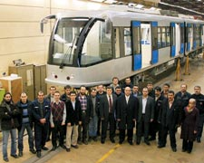
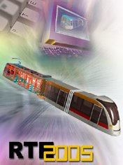
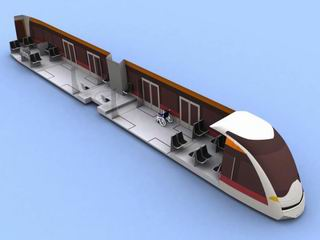

|
Ýlk
yerli tramvayý tasarlayarak yüzde 60 yerli malzemeyle imal
eden Türk mühendisler, yeni raylý sistem araçlarýnýn üretim
projelerine de imza atmak istiyor. Büyükþehir Belediyesi'ne
ait metro ve tramvay araçlarýnýn iþletmeciliðini yapan Ýstanbul
Ulaþým A.Þ. bünyesinde RTE 2000 araçlarýný üreten mühendislerin
gözü 2005-2006'da Alman þirketleriyle gerçekleþtirilecek ortak
üretim projelerinde.
Ulaþým
A.Þ. yetkilileri, metro ve tramvay araçlarý gövde prototip
imalatçýsý Fahrzeugtechnik Dessau AG ve araç elektrik ekipmanlarý
saðlayýcýsý Wossloh-Kiepe þirketleriyle iþbirliði yaparak
yerli tramvay, alçak ve yüksek tabanlý hafif metro (LRT) araçlarý
imalatýný hedefliyor. Finansman saðlanmasý halinde yerli tramvay
üretiminde seri üretime bile geçilebilecek.
RTE
(Railway Transport Equipment) tramvayý serisinde þu ana kadar
üç araç üreten ekip, RTE 2005'i önümüzdeki günlerde hatta
alarak deneme sürüþlerine baþlayacak. Asýl amaç ise araçlarýn
2006 modelini hatta ihtiyaç duyulan tramvaylarýn seri üretimini
gerçekleþtirebilmek.
Ýstanbul'un
yakýn dönem hafif metro ve alçak tabanlý araç ihtiyacýný bin
araç olarak hesapladýklarýný anlatan Ýstanbul Ulaþým A.Þ. Genel
Müdürü Süleyman Pektaþ, AB normlarýnda araçlarýn mühendislik
tasarýmlarýnýn tamamýný; gövde, iç ve dýþ giydirme, buggi
(araç taþýyýcý aksamlarý), montaj ve testlerinin yüzde 60-70'ini
yerli olarak imal edebileceklerini söylüyor.
Her
þey 250 bin dolarlýk CAD/CAM/CAE yazýlým yatýrýmýyla baþladý
Ulaþým
A.Þ., 1997'de bünyesinde bir ekip kurarak iþe baþlar. Marmara
Üniversitesi'nin endüstriyel tasarýmý yaptýðý ilk aracýn yerli
mühendislik hesaplarý yapýlýr, imalat oranlarý belirlenir.
250 bin dolarlýk yazýlým yatýrýmý yapýlýr. Çoðu Ýstanbul Teknik
Üniversitesi Uçak Mühendisliði ve Elektronik fakültelerinden
olmak üzere akademisyenlerden oluþan 12 kiþilik bir mühendis
kadrosu oluþturulur. Part time çalýþanlar ve 22 kiþilik Ulaþým
A.Þ. ekibiyle birlikte yerli tramvayýn tasarým ve üretim aþamalarýna
geçilir. Mart 1999'da bitirilip Eminönü-Zeytinburnu hattýnda
hizmete sunulan RTE 2000 modeli ile ilk yerli tramvay üretimi
gerçekleþtirilmiþ olur.
Mühendislerin
gayreti tozlu raflarda kalmasýn
Baþýndan
beri projenin içinde yer alan Ýstanbul Ulaþým A.Þ. Genel Müdür
Yardýmcýsý Ömer Yýldýz, "Ýþe ilk baþladýðýmýzda 20 tane metro
aracý kadavra olarak yatýyordu. Milyon dolarlar yatýrýlmasýna
karþýn, yedek parça olmamasý, güzergâhlarýn bitmemesi nedeniyle
bekledi bu araçlar. Araçtan araca yedek parça aktarýmýyla
baþlayan mühendislik süreci 1997 Haziran'ýndan itibaren projelendirildi."
diye anlatýyor o günleri. Türk mühendisliðinin baþarý hikâyesinin
tozlu raflara kaldýrýlmamasýný, yeni projelerle demiryolu
sanayiinde atýlýmlarýn hýzlandýrýlmasýný istiyor.
Ýstanbul'da
raylý sistem araçlarýna ilk ihtiyaç duyulduðu 1989'da Ýsveç'ten
2,5 milyon dolara ABB marka araçlar satýn alýnmýþtý. Araçlarý
üreten fabrikalar kapatýldý, þirketler el deðiþtirdi. Ancak
bu araçlar 14 yýldýr hâlâ hizmet veriyor. Demiryolu sanayiinde
yaþanan bu hýzlý geliþmeler, yüz milyon dolarlarýn yatýrýldýðý
araçlarýn atýl kalmasý riskini doðurdu. Her aracýn tamiri,
teknik detaylarý Türk mühendislerce öðrenildi. Dörtlü diziler
halinde çalýþan araçlar, tramvay hattýnda kullanýlmaya baþlayýnca
ikili diziye dönüþtürüldü. Araçlarýn sürücü kabinleri Türk
mühendislerince eklenip geliþtirildi.
Ar-Ge
Müdürü Murat Kavak, Ýstanbul'un hafif metro ve tramvaya kavuþmasýndan
sonra 1994-1997 arasýnda ciddi bir tecrübe süreci yaþandýðýný
anlatýyor. Raylarda meydana gelen her kazanýn proje üreten
ekipte kendini sürekli geliþtirme ihtiyacý doðurduðunu aktaran
Kavak, raylý sistem araçlarýnýn yerli mühendislerce tasarlanýp
üretilmesinin maliyeti yarýya indirdiðini söylüyor. RTE 2005
adýyla test sürüþlerine baþlayacak yeni aracýn proje ve üretim
maliyeti 750 bin Euro civarýnda.
1000
dolarlýk aynalar 40-50 dolara düþtü
Proje
grubu kurulmadan önce hatlarda meydana gelen kazalar ve sonu
gelmeyen bakým masraflarý dýþa baðýmlýlýðý körükledi. Satýn
alýnan araçlarda klima bile yoktu. Projeleri klima takmaya
uygun olmadýðý için 10 milyon dolarlýk yatýrým göze alýnmasýna
raðmen her araca 2 ton aðýrlýk ekleneceði gerekçesiyle yabancý
üreticiler bile bu iþten uzak kaldý. Özel bir proje grubu
600 kilogramlýk klimalarla sorunu çözüp araçlarý klimalý hale
getirdi. O zaman yabancý bir mühendisin Türkiye'ye bir haftalýðýna
geliþinin maliyeti 10 bin dolarý buluyordu. Yerli mühendis
ve ara kademe elemanlarý yetiþince önce tasarým süreci, sonra
da yedek parça imalat sanayii süreci yaþandý. O günlerde baþlayan
hareketlilikle bugün 266 yerli firma yan sanayi kuruluþu olarak
üretim yapýyor. Demireller, Göçmenler, Cer Çelik, Ostim, Termo
Makine gibi onlarca yerli imalatçýya da kapý aralanmýþ oldu.
Metro araçlarýnýn 1 milyar liraya yurtdýþýndan satýn alýnan
aynalarý Davutpaþa'daki imalatçýlarýn elinden 30-50 milyon
liraya üretilir hale geldi.
Uçak
mühendisleri tramvay tasarýmý yapýyor
Ar-Ge
Tasarým Mühendisi Kazým Can, uzay-uçak ve otomotiv sektöründe
kullanýlan tasarým programlarýyla 7 yýldýr a'dan z'ye metro
araçlarýnýn her þeyini tasarladýklarýný söylüyor. Boeing,
Airbus, Toyota, Mercedes gibi firmalarýn kullandýðý CATIA
V5 programý ile aracýn tasarýmý yapýlýyor. Sonra prototip
çýkarýlmasý, test ve imalat süreçleri yaþanýyor. Araç tamamlandýðýnda
ray üstündeki denemelerle eksikler tamamlanýyor. 15 yýllýk
uçak mühendisi Harun Yüzgeç, RTE projesinde civatasýndan elektronik
aksamýna kadar tüm mühendislik aþamalarýnýn hesabýný çýkaran
isim. 100 bin Euro'luk manyetik frenin mühendislik hesaplarýný
çözüp, modeli çýkarýldýðýnda maliyetlerin onda birlere düþtüðünü
anlatýyor. Yüzgeç, "Teknolojiyi satanlar hiçbir zaman mühendislik
bilgisini satmýyor. Bunu ancak araþtýrma geliþtirme birimleriyle
kendi mühendisleriniz yapar. Yerli üretimin temelinde bu yaklaþým
olmalý." diyor.
On
ikisi mühendis 35 kiþilik ekibin içindeki tek bayan olan Ortadoðu
Üniversitesi mezunu Hacer Çeri, metro araçlarýnýn en pahalý
aksamlarýndan araç kontrol sistemleri üzerinde çalýþýyor.
Milyonlarca dolara mal olan elektronik kontrol sistemlerinin
yazýlýmlarýný geliþtirmek, en pahalý aksamlarýn maliyetlerini
yarý yarýya düþürmek onun iþi.
Mart
1999'da hizmete giren RTE 2000 tramvay aracý Aðustos 2004'e
kadar 174 bin kilometre yol yaptý. Hatta çýktýðý ilk günlerde
seçim yasaklarýna takýldýðý için çok sesi duyulmayan RTE araçlarý,
Ýstanbul Büyükþehir Belediyesi ile Bombardier firmasý arasýndaki
pazarlýkta koz olarak kullanýldý. Bu sayede, Bombardier'den
satýn alýnan araçlarýn maliyeti 1,5 milyon dolara kadar düþtü.
Dört araçtan oluþan yerli filo Sultançiftliði-Edirnekapý hattýnda
kullanýlacak. Alman Fahrzeugtechnik Dessau AG ve araç elektrik
ekipmanlarý saðlayýcýsý Wossloh-Kiepe þirketleriyle yapýlan
düþük tabanlý metro aracý prototipleri ise Ocak 2006'da bitecek.
Yabancý yatýrýmcýlar, Ulaþým A.Þ. ve yerli ortakla yatýrým kararý
alýnmasýnýn ardýndan üretim için kollar sývanacak.
Dünya
kentlerinde hýzlanan metro yatýrýmlarý nedeniyle araç fiyatlarýnda
bir artýþ gözleniyor. Ýstanbul'un metro aracý ihtiyacýný karþýlamak
için yapýlan görüþmelerde araç baþýna verilen fiyatlar 2,3-3
milyon Euro arasýnda deðiþiyor. Tasarým ve mühendislik aþamasý
Türkiye'de yapýlmýþ bir tramvayýn maliyeti araçta kullanýlacak
malzemelerin yerli imalatçýlarca üretilmesi halinde 1,5 milyon
dolara düþüyor. Ýstanbul Ulaþým A.Þ. Genel Müdürü Süleyman
Pektaþ'a göre, bin araçlýk filonun imalatý için 2 milyar Euro'luk
finansman ihtiyacý var. Ýlk etapta 150-200 milyon Euro'luk
finansmanýn karþýlanmasý halinde yerli tramvayda seri üretim
gerçekleþtirilecek.
Daha
fazla bilgi için:
|